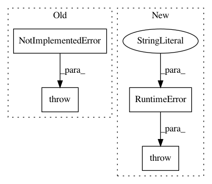

e6a0274621ef069da4659d6210c35468c24ee05b,pyprob/model.py,Model,forward,#Model#,26
Before Change
self._address_dictionary = AddressDictionary(address_dict_file_name)
def forward(self):
raise NotImplementedError()
def _trace_generator(self, trace_mode=TraceMode.PRIOR, prior_inflation=PriorInflation.DISABLED, inference_engine=InferenceEngine.IMPORTANCE_SAMPLING, inference_network=None, observe=None, metropolis_hastings_trace=None, likelihood_importance=1., importance_weighting=ImportanceWeighting.IW0, *args, **kwargs):
state._init_traces(func=self.forward, trace_mode=trace_mode, prior_inflation=prior_inflation, inference_engine=inference_engine, inference_network=inference_network, observe=observe, metropolis_hastings_trace=metropolis_hastings_trace, address_dictionary=self._address_dictionary, likelihood_importance=likelihood_importance, importance_weighting=importance_weighting)
while True:
After Change
self._address_dictionary = AddressDictionary(address_dict_file_name)
def forward(self):
raise RuntimeError("Model instances must provide a forward method.")
def _trace_generator(self, trace_mode=TraceMode.PRIOR, prior_inflation=PriorInflation.DISABLED, inference_engine=InferenceEngine.IMPORTANCE_SAMPLING, inference_network=None, observe=None, metropolis_hastings_trace=None, likelihood_importance=1., importance_weighting=ImportanceWeighting.IW0, *args, **kwargs):
state._init_traces(func=self.forward, trace_mode=trace_mode, prior_inflation=prior_inflation, inference_engine=inference_engine, inference_network=inference_network, observe=observe, metropolis_hastings_trace=metropolis_hastings_trace, address_dictionary=self._address_dictionary, likelihood_importance=likelihood_importance, importance_weighting=importance_weighting)
while True:
In pattern: SUPERPATTERN
Frequency: 4
Non-data size: 4
Instances
Project Name: pyprob/pyprob
Commit Name: e6a0274621ef069da4659d6210c35468c24ee05b
Time: 2020-07-12
Author: atilimgunes.baydin@gmail.com
File Name: pyprob/model.py
Class Name: Model
Method Name: forward
Project Name: OpenNMT/OpenNMT-tf
Commit Name: 187a5921a39ba2791176c1573c40850277d4a2ef
Time: 2020-05-29
Author: guillaumekln@users.noreply.github.com
File Name: opennmt/training.py
Class Name: Trainer
Method Name: _steps
Project Name: NervanaSystems/nlp-architect
Commit Name: 9267d77a87ac5d6736953f4822deab36b20945c7
Time: 2020-09-22
Author: daniel.korat@intel.com
File Name: nlp_architect/models/absa/inference/inference.py
Class Name: SentimentInference
Method Name: run_multiple
Project Name: Microsoft/nni
Commit Name: 77e91e8bc57cefadc8607a0866ab51ba33b01762
Time: 2019-11-20
Author: v-yugzh@microsoft.com
File Name: src/sdk/pynni/nni/nas/pytorch/base_mutator.py
Class Name: BaseMutator
Method Name: forward